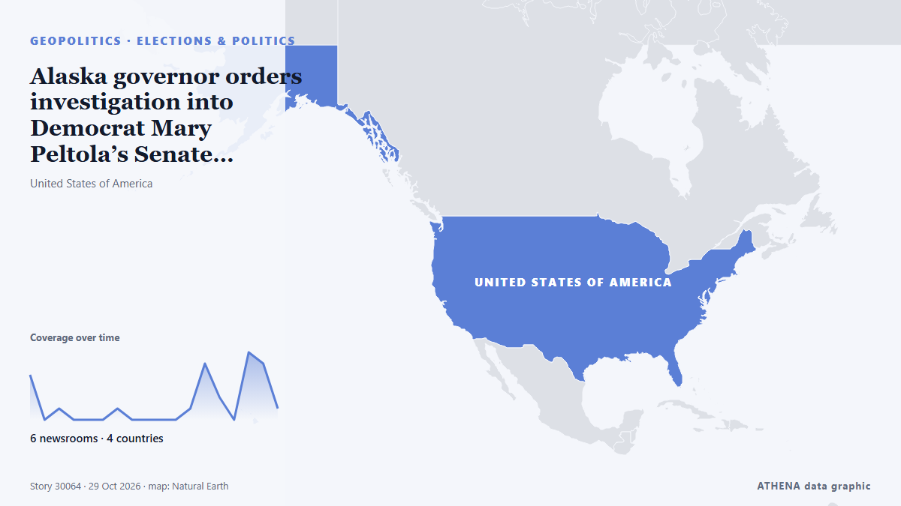

Alaska governor orders investigation into Democrat Mary Peltola’s Senate campaign

Republican Mike Dunleavy plans search after Peltola accused of recruiting Dan Sullivan to confuse voters The Republican governor of Alaska announced plans to launch a criminal investigation after a… von The Guardian
Unabhängig gemeldet von 6 Medien in 4 Ländern seit dem 25. Okt., zuerst von Politico; die Berichterstattung flaut ab. ATHENA findet in der Berichterstattung keine Risikoindikatoren. Die Konfidenz liegt bei 78 % (hoch): 6 Medien bestätigen es unabhängig, bei einer mittleren Verlässlichkeit der Quellen von 74 %. Wer berichtete: 19 Medien in Vereinigte Staaten · United States, 5 Medien in Vereinigtes Königreich · United Kingdom, 1 Medien in Singapur · Singapore. Die Berichterstattung lief von 25. Okt. bis 29. Okt., über 102 Stunden.
Warum es wichtig ist: Sicherheits- und diplomatische Entwicklungen können Bündnisse, Handel und Märkte weit über die direkt beteiligten Länder hinaus verschieben.
Was sich geändert hat: 13 neue Berichte von 5 Redaktionen in den 24 Stunden bis 29. Okt..
Erste Schlagzeile: Alaska Senate candidate Mary Peltola delays campaign stops after car crash
Schlagzeilen werden auf Englisch angezeigt, wie veröffentlicht.
Auf einen Blick
Ausgewählt, bewertet und geschrieben nach der veröffentlichten Methodik von ATHENA. Kein Redakteur greift in einzelne Ereignisse ein. So entsteht ATHENA ›
| 25 Oct 17:26 UTC | 4 |
|---|---|
| 25 Oct 23:26 UTC | 0 |
| 26 Oct 05:26 UTC | 1 |
| 26 Oct 11:26 UTC | 0 |
| 26 Oct 17:26 UTC | 0 |
| 26 Oct 23:26 UTC | 0 |
| 27 Oct 05:26 UTC | 1 |
| 27 Oct 11:26 UTC | 0 |
| 27 Oct 17:26 UTC | 0 |
| 27 Oct 23:26 UTC | 0 |
| 28 Oct 05:26 UTC | 0 |
| 28 Oct 11:26 UTC | 1 |
| 28 Oct 17:26 UTC | 5 |
| 28 Oct 23:26 UTC | 2 |
| 29 Oct 05:26 UTC | 0 |
| 29 Oct 11:26 UTC | 6 |
| 29 Oct 17:26 UTC | 5 |
| 29 Oct 23:26 UTC | 1 |
| 25 Oct 17:28 UTC | 0.0 |
|---|---|
| 26 Oct 11:34 UTC | 0.8 |
| 27 Oct 10:19 UTC | 0.0 |
| 29 Oct 23:45 UTC | 0.0 |
Warum diese Zahlen
Bedeutung
Risiko
Konfidenz
Die Berichterstattung – wer berichtete, und wann
Schlagzeile wie veröffentlicht · öffnet das Original- Politico · Vereinigte Staaten · United StatesPeltola postpones campaign stops after Saturday car crash
- PBS NewsHour · Vereinigte Staaten · United StatesAlaska Democratic Senate candidate Mary Peltola and her family suffer minor injuries in car crash
- The Guardian · Vereinigtes Königreich · United KingdomAlaska Senate candidate Mary Peltola delays campaign stops after car crash
- The Hill · Vereinigte Staaten · United StatesPeltola to reschedule Fairbanks, Bethel campaign stops after car crash
- The Guardian · Vereinigtes Königreich · United KingdomTrump continues midterm campaign blitz in Mississippi amid outcry over racist, Islamophobic attacks – as it happened
- The Hill · Vereinigte Staaten · United StatesSenate braces for nasty fight over seating Peltola after Alaska Senate race
- The Hill · Vereinigte Staaten · United StatesPeltola denies New York Times report her campaign recruited other Sullivan
- The Guardian · Vereinigtes Königreich · United KingdomDemocrat Mary Peltola’s campaign reportedly recruited second Dan Sullivan in Alaska Senate race
- The Hill · Vereinigte Staaten · United StatesTrump: Peltola should be removed from ballot following New York Times report
- The Hill · Vereinigte Staaten · United StatesRepublicans rip Peltola over report her campaign recruited second Sullivan
- PBS NewsHour · Vereinigte Staaten · United StatesWATCH: Trump calls for Peltola to drop out after report her campaign helped recruit 2nd Dan Sullivan
- The Hill · Vereinigte Staaten · United StatesWhy the Peltola ‘spoiler’ controversy may be too late to shake up Alaska
- PBS NewsHour · Vereinigte Staaten · United StatesTrump calls for prosecution of Alaska Senate candidate Peltola over Sullivan name controversy
- The Straits Times · Singapur · SingaporeTrump calls for Mary Peltola to be banned from Alaska Senate race
- The Hill · Vereinigte Staaten · United StatesAlaska governor orders investigation into Peltola Senate campaign
- The Hill · Vereinigte Staaten · United StatesTim Scott calls for DOJ investigation of Peltola campaign
- The Guardian · Vereinigtes Königreich · United KingdomAlaska governor orders investigation into Democrat Mary Peltola’s Senate campaign
- PBS NewsHour · Vereinigte Staaten · United StatesAlaska's governor orders a probe into Peltola's Senate campaign over spoiler candidate controversy
- The Hill · Vereinigte Staaten · United StatesPeltola's Alaska Senate race controversy; final midterms forecast: Live discussion
- The Hill · Vereinigte Staaten · United StatesVance undecided on whether Peltola should be prosecuted
- The Hill · Vereinigte Staaten · United StatesAlaska Dems caught red-handed; Mary Peltola knew of 'Dan Sullivan' ballot plot
- The Hill · Vereinigte Staaten · United StatesHouse GOP launches probe into Peltola campaign ballot stacking allegations
- CBC News · Kanada · CanadaDirty tricks or much ado about nothing? Why Alaska, for once, is front and centre in midterms
- The Guardian · Vereinigtes Königreich · United KingdomDoJ reportedly issues subpoenas over same-name Alaska candidates
- The Hill · Vereinigte Staaten · United StatesRepublicans have knives out for Peltola as Democrats largely silent
- The Hill · Vereinigte Staaten · United StatesHouse Oversight Democrat maintains support for Peltola, defers to Alaska for next steps